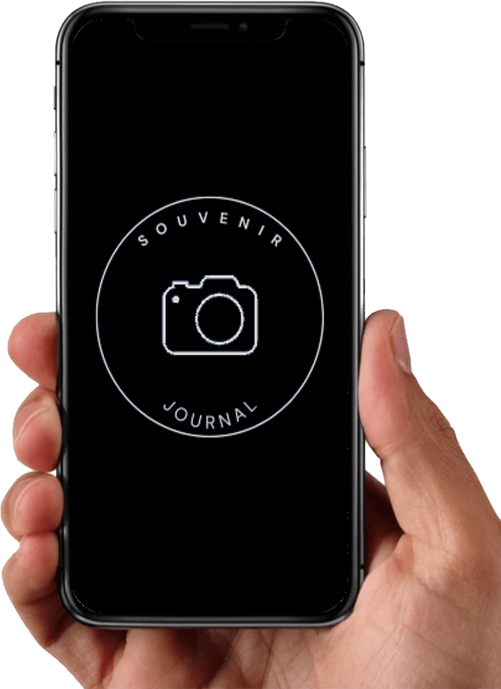
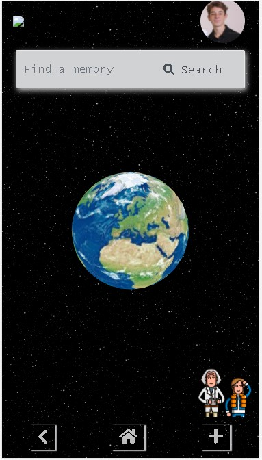
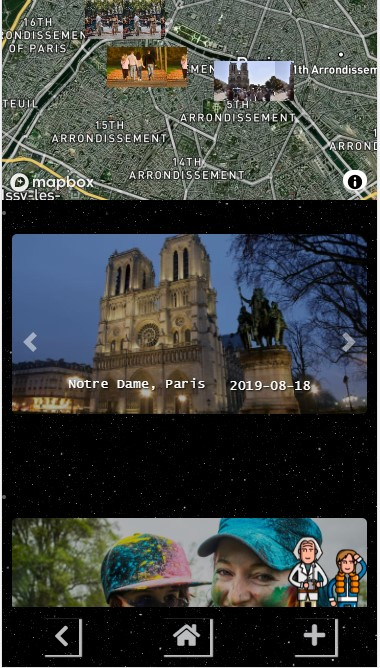
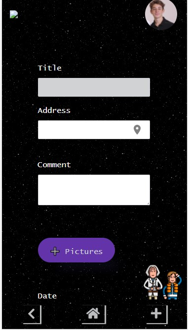

📷
Souvenir
#code repository available at github.com

👨💻 About
This was the final project presented on the Demo Day at Le Wagon coding bootcamp🔔!
"Projects Phase is the ultimate experience of Le Wagon 9-weeks coding bootcamp: invent, pitch, design, code and deploy an original project in teams of 3 or 4 people during the two final weeks. On the last day of the bootcamp, our Wagoners will present their products at our hugely popular Demo Day!" (Le Wagon)

Made from scratch. A mobile-first app. Designed, implemented, and shipped to production, coded in Ruby on Rails. Our web app is a simple way to organize and remember experiences in life. It allows the user to keep memories stored in a safe and easy way to access, since they can navigate through time and space to find one.
📚 Contents
🚀 Get started
you can access the app on: souvenir-app-lw.herokuapp.com. 💻
you can watch the demo of the product on: souvenir-app-lw.herokuapp.com.
✍️ Usage and examples
After the login (Fake "log in" with user ze@ninguem.com and password 123456), you can count on Dr. Brown's avatar at the bottom right to help you navigate through the app.
On the home page, you will find a search bar where is possible to input a location, a specific date or both queries to be searched. It will list all the results associated with that. Let's assume you are looking for your memories in Paris in 2019. The map at the top shows all memories pinned on their actual locations. Bellow they are showed by album:

If you choose one and click on it, you will be redirected to that album.
When you have something new to add, you just have to click on the plus button that redirects you to another page where it is possible to add a new memory, with location and pictures.

⚙️ Built using
- HTML;
- CSS;
- JavaScript;
- Cloudinary;
- Mapbox;
- Ruby on Rails;
- WebGL Earth API;
⚠️ Credits
This project is part of the content of Le Wagon coding bootcamp.
A Rails app generated with lewagon/rails-templates.